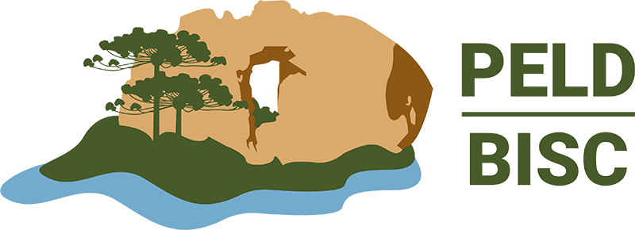

SOBRE NÓS
CONSERVAÇÃO DOS CAMPOS
DISTÚRBIOS
GUIAS DE CAMPO
GUIA BOTÂNICO DOS CAMPOS
Descubra a flora dos campos de altitude do Parque Nacional de São Joaquim
500+
ESPÉCIES
100+
FOTOS
CONTRIBUA COM FOTOS PARA O SITE
Galeria de fotos
Ordenar:
Família A-Z
Família Z-A
Nome científico A-Z
Nome científico Z-A
Cor da flor
+
Amarela
Azul
Branca
Laranja
Marrom
Preta
Rosa
Roxa
Verde
Vermelha